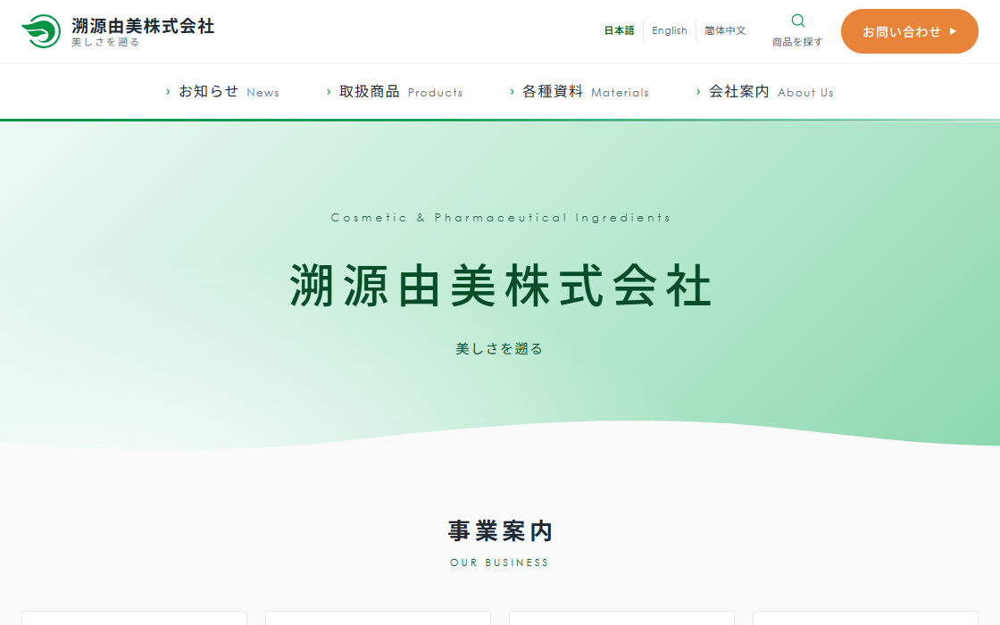

HAVALON (collaboration)
A multiplayer Avalon board game for phones, with expansion roles, voice chat, transcripts and an AI-generated game review. My part: the round-table view with leader rotation, voting and quest cards as dialogs, automatic voice reconnection after a phone sleeps, a fallback when microphone access is refused, timeouts for stalled requests, cleanup of expired data, and accessibility fixes for contrast and tap targets.
Next.jsTypeScriptDrizzle ORMCloudflare WorkersVercel
Play it
3D map history videos
History explainers made with AI from research through AI-voiced narration to 3D map animation. Each film uses one real-terrain 3D map and tells the story with colored territory, years and captions. The videos are in Chinese.
RemotionWebGLFFmpegAI voice
AI Sudoku Coach
When you are stuck, the AI explains how to think about the next move in three levels instead of giving the answer, and its reasoning is checked against the solution before it is shown. Supports six AI providers including Claude, ChatGPT and Gemini, importing puzzles from photos, pencil marks, a number-lock mode and self-updates from GitHub Releases. No third-party libraries.
AndroidKotlinLLM API
GitHub
MangaReader
An Android manga reader. It parses web pages for titles and chapters, offers three reading modes and zoom gestures, and checks followed titles for updates in a foreground service that keeps running in the background. All data stays on the phone. Multiple editions are managed with product flavors, with a one-step script that builds, verifies signatures and publishes.
AndroidJavajsoupGradle

Origin Yumi corporate website
Rebuilt the corporate website of Origin Yumi Co., Ltd. (溯源由美株式会社) with a custom WordPress theme. Converted the logo from the original EPS to SVG myself, managed colors with design tokens and measured WCAG contrast, with Japanese, English and Simplified Chinese and automatic OGP/meta tags.
WordPressPHPCSSPython
Japanese Mahjong Score Calculator
An Android app that calculates fu, han and points from a hand, published as an APK on GitHub Releases.
AndroidKotlinGradle
myHistoryViewer
A single-file web tool for browsing and analyzing an archive of your own social posts and stories, with a map view and AI analysis.
JavaScriptSingle-file web
Muse Feed
An Android app that sorts Threads posts into "general" and "business" for a personalized feed.
Android